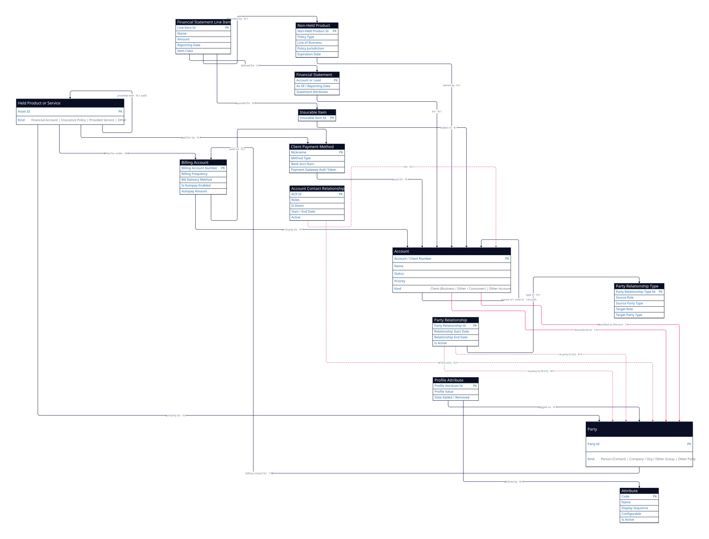

1 · Entities (14 objects)
Each entity with why it's used. The pink field is the entity's primary key.
| # | Entity | Why it's used | Key fields | Subtypes / record-types |
|---|---|---|---|---|
| 1 | Held Product or Service (Asset) | The umbrella for everything a customer holds with you. | Asset Id | Financial Account (# Account Number, Line of Business); Insurance Policy (# Policy Number, Line of Business, Effective Date, Policy Type, Expiration Date); Provided Service; Other Held Product or Service |
| 2 | Financial Statement (FinancialStatement__c) | A customer's financial statement (KYC / suitability). | Account or Lead, As Of / Reporting Date, Statement Attributes | — |
| 3 | Financial Statement Line Item (FinancialStatementLineItem__c) | One line on a financial statement. | Line Item Id, Name, Description, Amount, Reporting Date, Class, Line Item Attributes | Reported Income / Expense / Asset / Liability; Other Line Item; Reported Insurable Item |
| 4 | Billing Account (BillingAccount__c) | How a customer is billed. | Name / Billing Account Number, Billing Frequency, Bill Delivery Method, Billing Address / Email, Is Autopay Enabled, Autopay Amount | — |
| 5 | Client Payment Method (PaymentMethod__c) | A saved way to pay. | Nickname, Method Type, Bank Acct Num, Payment Gateway Auth. Token | — |
| 6 | Non-Held Product (NonHeldProduct__c / NonHeldPolicy__c) | A product / policy the customer holds elsewhere (competitor intel). | Non-Held Product Id, Expiration Date, Policy Type, Line of Business, Policy Jurisdiction | — |
| 7 | Insurable Item (InsurableItem__c) | A thing that could be insured but isn't yet (quote-ready). | Insurable Item Id | — |
| 8 | Party (Party__c) | Any person or organisation — the universal actor. | Party Id | Person (Contact); Company, Organization or Other Group; Other Party |
| 9 | Party Relationship (PartyRelationship__c) | Junction linking two parties (e.g. spouse, employer). | Party Relationship Id, Relationship Start Date, Relationship End Date, Is Active? | — |
| 10 | Party Relationship Type (PartyRelationshipType__c) | The roles / types a party relationship can take. | Party Relationship Type Id, Source Role, Source Party Type, Target Role, Target Party Type | — |
| 11 | Profile Attribute (AttributeAssignment__c) | EAV — an attribute value assigned to a party. | Profile Attribute Id, Profile Value, Date Added / Removed | — |
| 12 | Attribute (Attribute__c) | The definition of a configurable attribute. | Code, Name, Display Sequence, Display as Filter?, Configurable?, Is Active? | — |
| 13 | Account Contact Relationship (AccountContactRelationship) | Junction linking an account to a contact (person). | ACR Id, Roles, Active, Start / End Date, Is Direct | — |
| 14 | Account (Account) | The CRM account — the customer record. | Client Number / Account Id, Name, Status (Prospect/Client), Priority | Client → Business Client (# Employees, # FTEs), Other Client, Consumer Client; Other Account |
2 · Relationships (24 relationships)
A 1:N B = one A, many B. The Relationship column is the verb (the named edge): read it as From · relationship · To. The two junction entities (Party Relationship #15–16, Account Contact Relationship #20–21) are the model's many-to-many links, kept as entities.
| # | From | Relationship | Card. | To | What it means (plain English) |
|---|---|---|---|---|---|
| 1 | Held Product or Service | primarily for | N:1 | Party | a held product / service is held primarily for one party (the holder). |
| 2 | Held Product or Service | billed for under | N:1 | Billing Account | a policy / asset is billed under a billing account. |
| 3 | Held Product or Service | paid for via | N:1 | Client Payment Method | an asset is paid for via a payment method. |
| 4 | Billing Account | primarily for | N:1 | Account | a billing account belongs primarily to one account. |
| 5 | Billing Account | paid via | N:1 | Client Payment Method | a billing account is paid via a payment method. |
| 6 | Client Payment Method | saved for | N:1 | Account | a payment method is saved / set up for an account. |
| 7 | Person | billing contact for | 1:N | Billing Account | a person is the billing contact for billing accounts. |
| 8 | Financial Statement | for | N:1 | Account | a financial statement is for one account. |
| 9 | Financial Statement Line Item | defined for | N:1 | Financial Statement | a line item belongs to one statement. |
| 10 | Financial Statement Line Item | described by | N:1 | Non-Held Product | a line item can be described by a non-held product. |
| 11 | Financial Statement Line Item | reported for | N:1 | Insurable Item | a "reported insurable item" line points to an insurable item. |
| 12 | Non-Held Product | owned by | N:1 | Account | a non-held product is owned by an account. |
| 13 | Insurable Item | subject of | N:1 | Account | an insurable item belongs to an account. |
| 14 | Account | parent of / child of | 1:N (self) | Account | account hierarchy (parent company → subsidiary). |
| 15 | Party Relationship | a party to (from) | N:1 | Party | the "from" party of the relationship. |
| 16 | Party Relationship | a party to (to) | N:1 | Party | the "to" party of the relationship. |
| 17 | Party Relationship | type of | N:1 | Party Relationship Type | the relationship's roles / type. |
| 18 | Profile Attribute | tagged on | N:1 | Party | an attribute value sits on a party. |
| 19 | Profile Attribute | defined by | N:1 | Attribute | the attribute definition the value uses. |
| 20 | Account Contact Relationship | for | N:1 | Account | the account side of the account-contact link. |
| 21 | Account Contact Relationship | of | N:1 | Person | the person side of the account-contact link. |
| 22 | Account | considered as | 1:1 | Party | an account is also represented as a party (Account ↔ Party duality). |
| 23 | Account (Consumer Client) | identified as | 1:1 | Person | a consumer / sole-proprietor account is the same as one person. |
| 24 | Held Product or Service | provided with | N:1 (self) | Held Product or Service | a financial account can be bundled with an insurance policy. |
Validation notes
- This is the faithful source model — it keeps the junction objects as entities, exactly like the other three source views. Party Relationship (#15–16) is the Party ↔ Party many-to-many; Account Contact Relationship (#20–21) is the Account ↔ Person many-to-many. (The earlier "graph-native" Customer Model collapsed these into edges and dropped Attribute / Profile Attribute / Party Relationship Type — that version is the Qubru mapping, a separate step.)
- The Account ↔ Party duality is the spine of this view: holdings (Asset) hang off Party (#1), while billing / statements / non-held / insurable items hang off Account (#4, #8, #12, #13); the two are bridged by "considered as" (#22) and "identified as" (#23). Account and Party are the same real-world customer viewed two ways.
- 1:1: Account ↔ Party (#22), Account ↔ Person (#23). Self: Account hierarchy (#14), Asset "provided with" (#24).
- Read from the ERD, please confirm: #10 line-item "described by" Non-Held Product; #24 "provided with" (Financial Account ↔ Insurance Policy bundle); the 1:1 reading on #22 / #23.
Source: Vlocity “Insurance and Financial Services Customer Model” ERD (Sept 2020). Faithful source model — Qubru mapping is a separate step.
3 · Diagram (rendered from D2 — 14 entities · 24 relationships)
Code-based diagram (D2) of the exact same model in the tables above. Source: 2026-06-14-customer-model-faithful.d2 · pink-dashed = the two M:N junction entities (Party Relationship, Account Contact Relationship) · pink-solid = the Account ↔ Party duality. Party and Account are the twin hubs.
